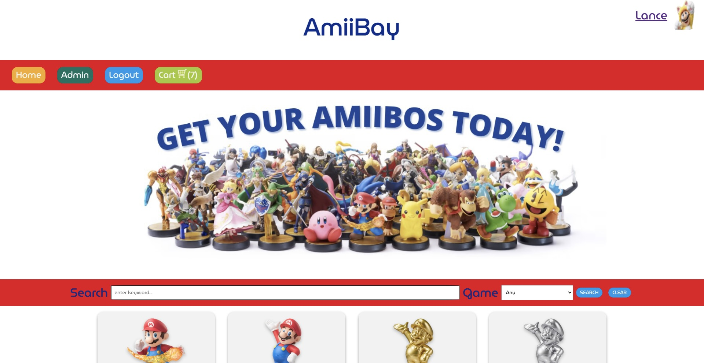
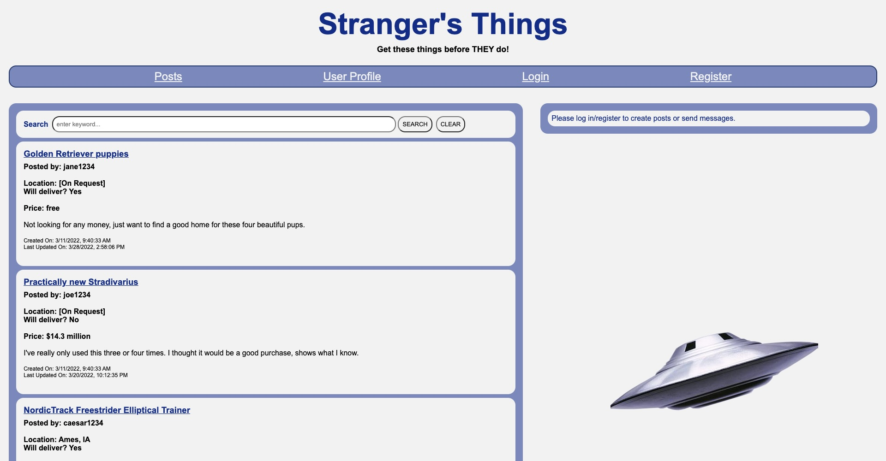
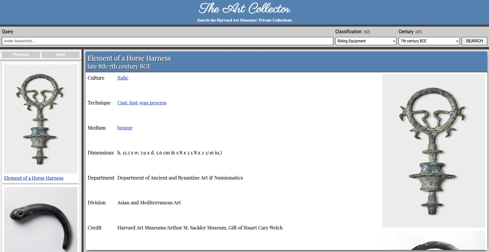
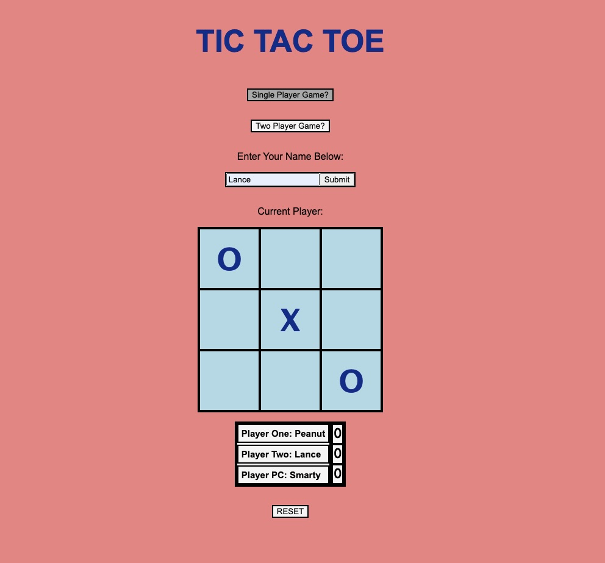
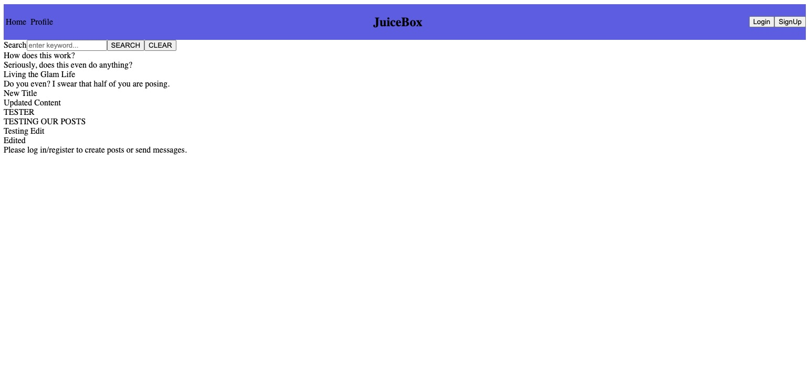
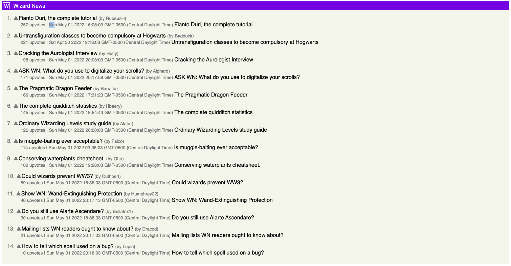
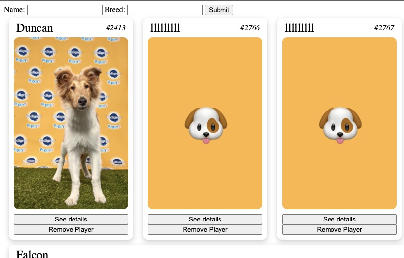
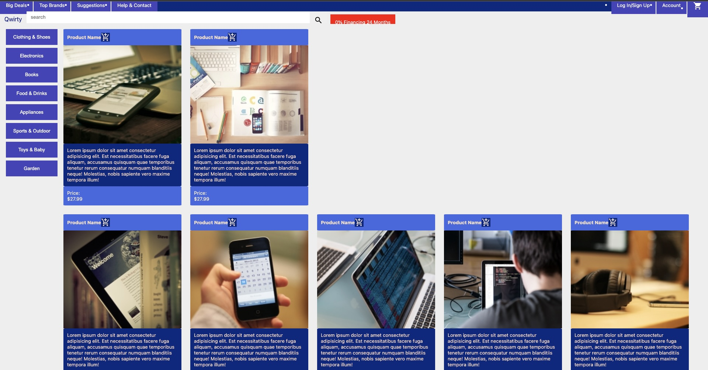
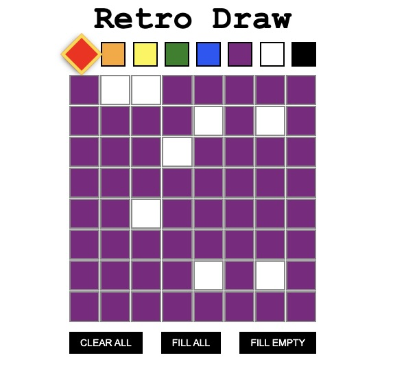

The capstone project for Fullstack Academy was titled the
Grace-shopper Project and was a group project with two other
developers from the 2202 FSA Cohort (Joel Block, and Derrick
Hinh). This project focused on divying up the work into vertical
slices, unlike a normal production led project in which teams are
usually working on separate portions, like the 'front-end or
back-end'. Each participant was able to design a function from the
front-end all the way to the back end database portion. The site
itself was completed in a short time-cycle with a blistering
amount of commits from all three team members. The e-commerce site
boasts a ton of functionality for both a customer and for the
designed site owner to receive, track, and complete Ameebay
shopping orders. We also designed a custom database that was
seeded from other API databases to take in information from
multiple sources and combine them to form a functional database
designed to fit the client's unique needs.

Heroku has discontinued their 'hobbyist' free databases. This capstone project is no longer being maintained, however, the code is public and available in my Github account. Please view the youtube video from the above picture to get a highlight of this awesome website.

This pair project to create a "craig's list lite" was a ton of
fun! This was our first attempt at completing a fully functional
front-end product from scratch. We learned how to add posts,
render messages, and add functionality to a page for user's to
interact with our website and the API back-end.

Art Collector was a fun experience learning to send API requests
with the help of AJAX helper functions and seeing those requests
show up on a webpage! You can view the netlify deployed site above
but the GitHub Repository is set to private via Fullstack Academy.

Fitness Tracker was a Fullstack Academy led workshop in which me
and one other developer worked as a team to fully display our
Fitness Tracker website.
The Fitness Tracker Back-end was a separate project which was
completed with one other team member giving the FSA cohort
participants a better understanding of back-end routing and
database creation. This project was completed with a guided set of
pre-formed testing criteria that needed to be completed in order
to pass the project.

This project was simple build a website that was capable of
playing a game. I chose Tic Tac Toe because I love playing this
with my daughters and they found this to be one of my most
interesting web apps. Nothing makes me more proud than having my
kids be excited about what I'm learning to create.

The Juicebox project was a back-end only guided workshop through
the FSA boot-camp that introduced us to database creation with the
NERD stack. Juicebox is a 'simple' Tumblr clone but was anything
but simple to implement.

The Juicebox project was a guided workshop through the FSA
boot-camp that introduced us to database creation with the NERD
stack. We were then given the opportunity to create and connect
this to a working 'front-end'.

As with most of the projects this was a group pair project that
focused on introducing us to using Express.

This solo project was a project meant to test our understanding of
dealing with arrays of arrays. The sudoku checker is mainly a
function that accepts a single sudoku grid and returns

This project was an FSA guided workshop in which we learned to use
AJAX to access data from an API. The app we built was to view and
manage the roster for an upcoming PuppyBowl game. (Kinda like the
SuperBowl for Puppies!). We worked on completing the front-end in
order to view the roster, see a player's details, add players to
the roster and more.

The goal of this FSA project was to build a standard feeling
e-commerce front-end with CSS styling and utilizing CSS
principles.

The goal of this FSA project was to build an 8x8 fillable
application that would allow a user to fill the board with colors
and paint by square. This project also has clear all, fill all,
and fill empty buttons.

This was a guided console based application that I created with
the Udemy course C# Basics for Beginners. This was one of my first
creations from C# and my kids really enjoyed playing it with me!

This was my first experience with any type of app creation.
Appsheet.com allowed me to explore with pseudo-code to create my
own mobile and web friendly app from an inventory sheet. I also
used this app to help my co-workers at TEAM industrial keep up
with our shared inventory. This was the project that hooked me
into believing I could learn how to code!